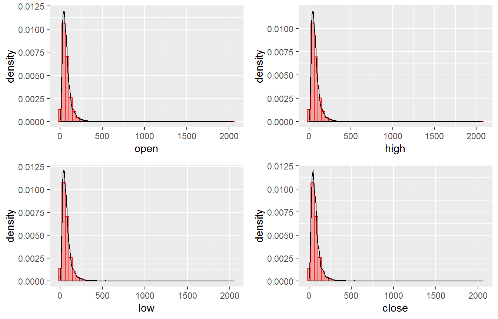
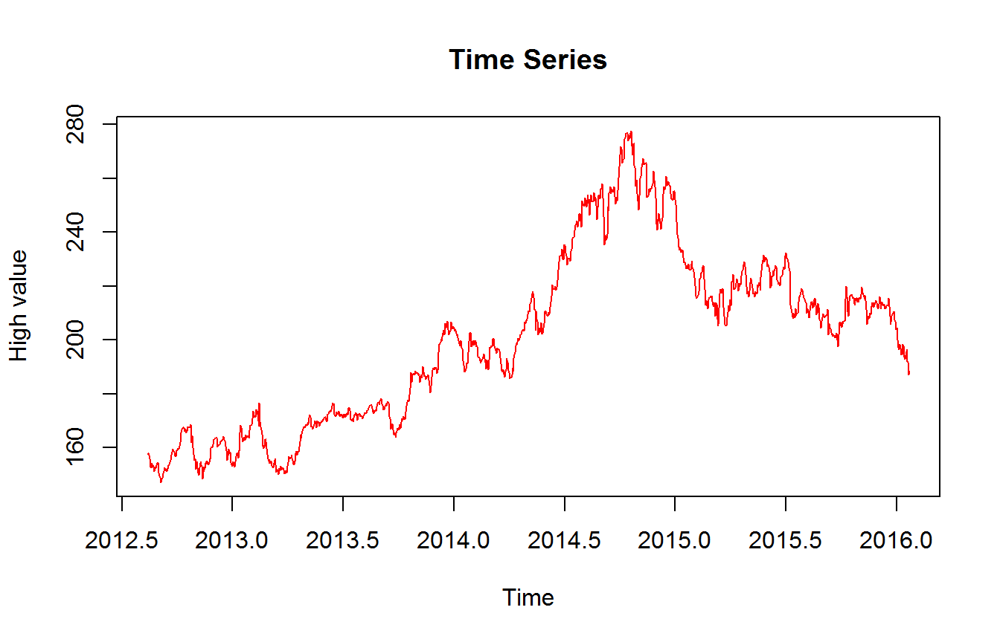
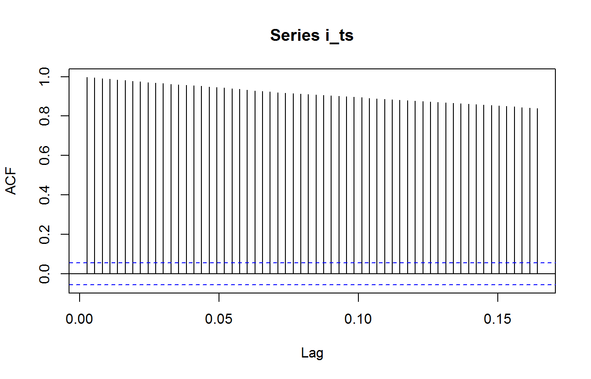
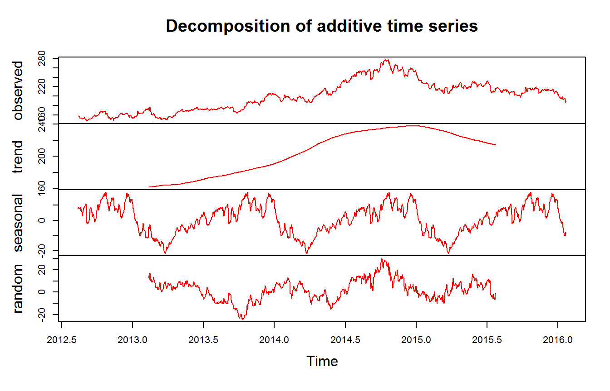
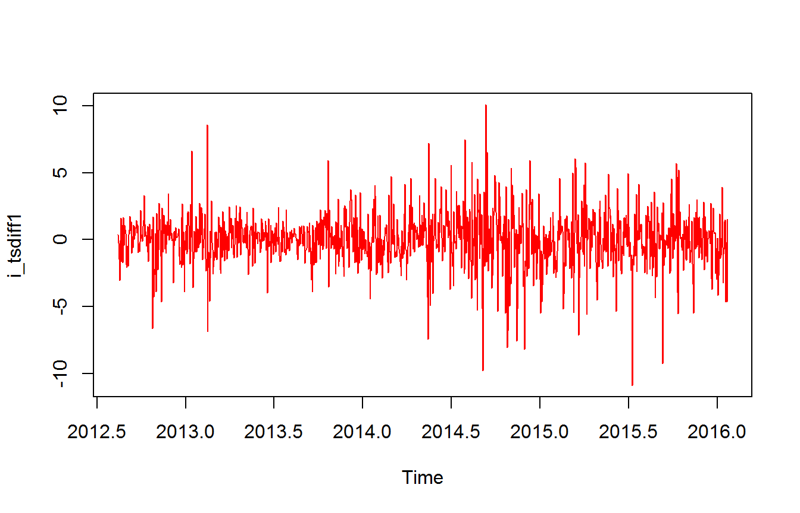
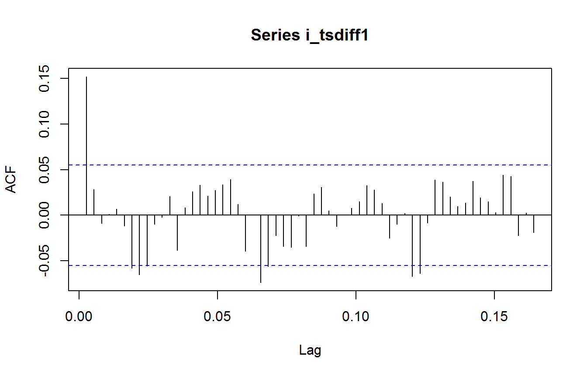
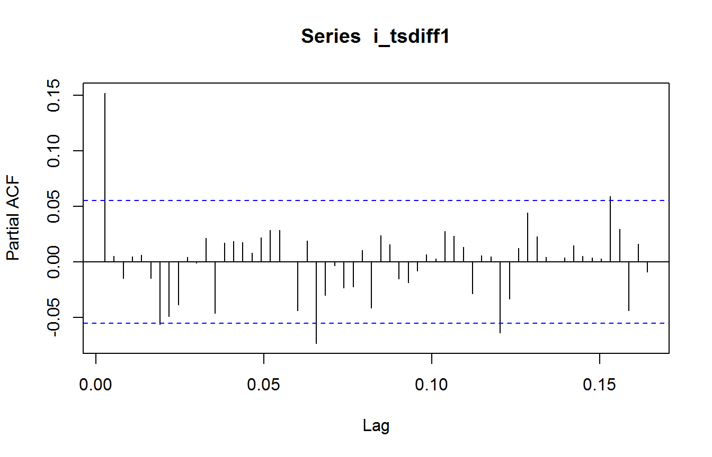
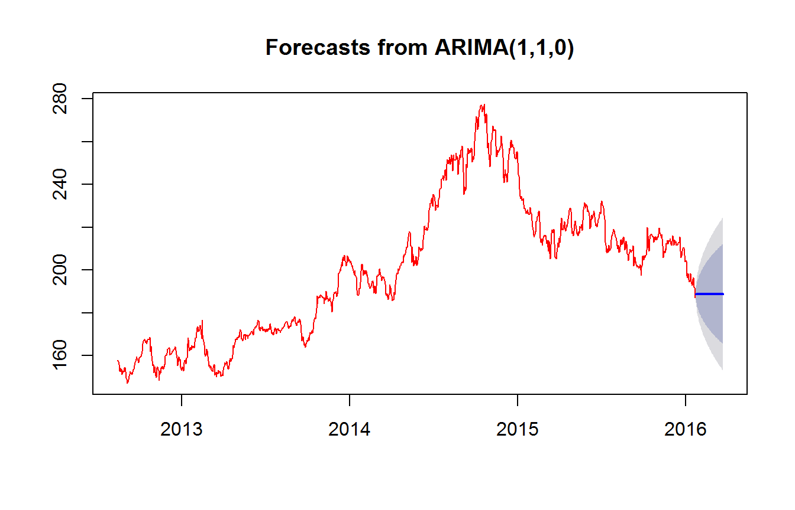
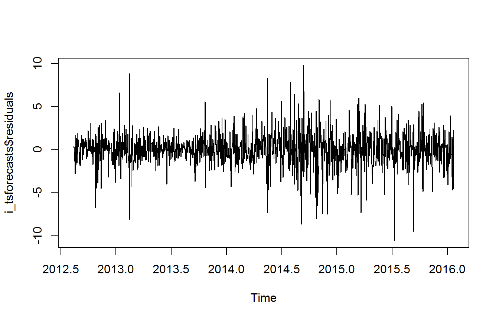
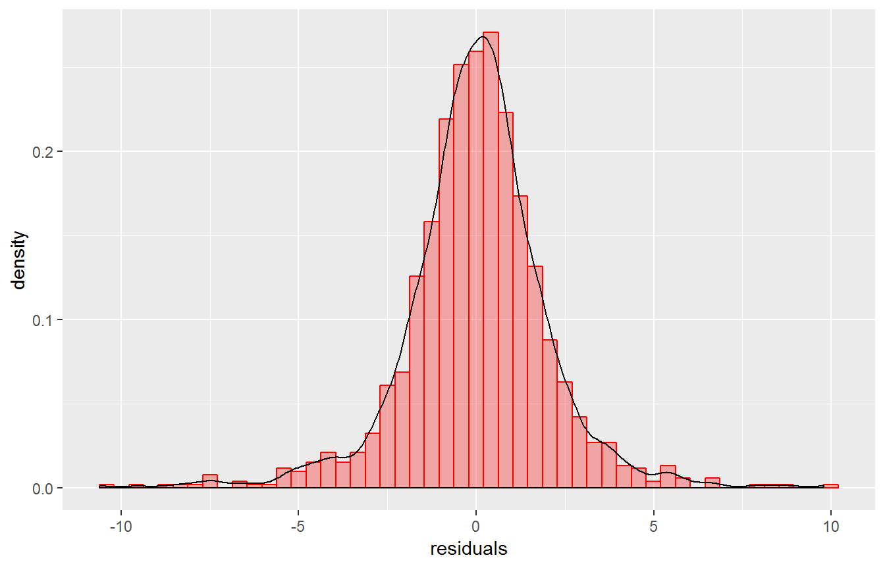

This notebook provides a step-by-step guide for fitting an ARIMA model on the stock data, using R.
References: 1. https://a-little-book-of-r-for-time-series.readthedocs.io/en/latest/src/timeseries.html 2. https://sites.google.com/site/econometricsacademy/econometrics-models/time-series-arima-models
packages = c("ggplot2", "dplyr", "tidyr", "data.table", 'corrplot', 'gridExtra', 'forecast', 'tseries', 'TSA', 'tibble', 'TTR')
my.install <- function(pkg, ...){
if (!(pkg %in% installed.packages()[,1])) {
install.packages(pkg)
}
return (library(pkg, ...))
}
purrr::walk(packages, my.install, character.only = TRUE, warn.conflicts = FALSE)## corrplot 0.84 loaded## Loading required package: leaps## Loading required package: locfit## locfit 1.5-9.1 2013-03-22## Loading required package: mgcv## Loading required package: nlme##
## Attaching package: 'nlme'## The following object is masked from 'package:forecast':
##
## getResponse## The following object is masked from 'package:dplyr':
##
## collapse## This is mgcv 1.8-17. For overview type 'help("mgcv-package")'.s_data <- read.csv(file ="C:/Users/ordinateur/Documents/all_stocks_5yr.csv")We will use ‘summary’ and ‘str’ fuctions of R to look at the data.
summary(s_data)## date open high low
## 2017-12-05: 505 Min. : 1.62 Min. : 1.69 Min. : 1.50
## 2017-12-06: 505 1st Qu.: 40.22 1st Qu.: 40.62 1st Qu.: 39.83
## 2017-12-07: 505 Median : 62.59 Median : 63.15 Median : 62.02
## 2017-12-08: 505 Mean : 83.02 Mean : 83.78 Mean : 82.26
## 2017-12-11: 505 3rd Qu.: 94.37 3rd Qu.: 95.18 3rd Qu.: 93.54
## 2017-12-12: 505 Max. :2044.00 Max. :2067.99 Max. :2035.11
## (Other) :616010 NA's :11 NA's :8 NA's :8
## close volume Name
## Min. : 1.59 Min. : 0 A : 1259
## 1st Qu.: 40.24 1st Qu.: 1070320 AAL : 1259
## Median : 62.62 Median : 2082094 AAP : 1259
## Mean : 83.04 Mean : 4321823 AAPL : 1259
## 3rd Qu.: 94.41 3rd Qu.: 4284509 ABBV : 1259
## Max. :2049.00 Max. :618237630 ABC : 1259
## (Other):611486str(s_data)## 'data.frame': 619040 obs. of 7 variables:
## $ date : Factor w/ 1259 levels "2013-02-08","2013-02-11",..: 1 2 3 4 5 6 7 8 9 10 ...
## $ open : num 15.1 14.9 14.4 14.3 14.9 ...
## $ high : num 15.1 15 14.5 14.9 15 ...
## $ low : num 14.6 14.3 14.1 14.2 13.2 ...
## $ close : num 14.8 14.5 14.3 14.7 14 ...
## $ volume: int 8407500 8882000 8126000 10259500 31879900 15628000 11354400 14725200 11922100 6071400 ...
## $ Name : Factor w/ 505 levels "A","AAL","AAP",..: 2 2 2 2 2 2 2 2 2 2 ...The data has some missing values, which we will replace with zero. Also, ‘Date’ feature is listed as factor, we will convert that to ‘Date’ structure.
s_data[is.na(s_data)] <- 0
s_data$Date <- as.Date(s_data$date, format = "%Y-%m-%d")options(repr.plot.width=12, repr.plot.height=12)
p1 = ggplot(s_data, aes(open)) + geom_histogram(bins = 50, aes(y = ..density..), col = "red", fill = "red", alpha = 0.3) + geom_density()# + xlim(c(0, 1000))
p2 = ggplot(s_data, aes(high)) + geom_histogram(bins = 50, aes(y = ..density..), col = "red", fill = "red", alpha = 0.3) + geom_density()# + xlim(c(0, 1000))
p3 = ggplot(s_data, aes(low)) + geom_histogram(bins = 50, aes(y = ..density..), col = "red", fill = "red", alpha = 0.3) + geom_density()# + xlim(c(0, 1000))
p4 = ggplot(s_data, aes(close)) + geom_histogram(bins = 50, aes(y = ..density..), col = "red", fill = "red", alpha = 0.3) + geom_density()# + xlim(c(0, 1000))
grid.arrange(p1,p2,p3,p4, nrow=2,ncol=2)
Before we start with the time series analysis, lets go through the theory in brief.
What is AutoRegressive or AR model:
Autoregressive (AR) models are models where the value of variable in one period is related to the values in the previous period. AR(p) is a Autoregressive model with p lags.
What is Moving Average or MA model:
Moving average (MA) model accounts for the possibility of a relationship between a variable and the residual from the previous period. MA(q) is a Moving Average model with q lags.
What is ARMA model: Autoregressive moving average model combines both p auto regressive terms and q Moving average terms, also called ARMA(p,q)
Now lets look at some individual stocks and individual time series (Open, Close, High, Low, Volume)
tmp <- filter(s_data, high > 100) ## Warning: package 'bindrcpp' was built under R version 3.4.3sample(tmp$Name, 10)## [1] LYB LLL TRV UHS FRT XEC IBM AVB VMC GS
## 505 Levels: A AAL AAP AAPL ABBV ABC ABT ACN ADBE ADI ADM ADP ADS ... ZTSi_stock <- filter(s_data, Name == "PSA")
str(i_stock)## 'data.frame': 1259 obs. of 8 variables:
## $ date : Factor w/ 1259 levels "2013-02-08","2013-02-11",..: 1 2 3 4 5 6 7 8 9 10 ...
## $ open : num 156 157 157 157 156 ...
## $ high : num 158 158 158 157 156 ...
## $ low : num 156 157 156 156 154 ...
## $ close : num 157 157 157 156 154 ...
## $ volume: int 379613 421306 794460 739185 889790 1676446 694123 634976 617738 530961 ...
## $ Name : Factor w/ 505 levels "A","AAL","AAP",..: 382 382 382 382 382 382 382 382 382 382 ...
## $ Date : Date, format: "2013-02-08" "2013-02-11" ...We will use tsclean and ts function of R to create a time series.
tsclean() is a convenient method for outlier removal and inputing missing values
ts() is used to create time-series objects
## Create a daily Date object
inds <- seq(as.Date("2012-08-13"), as.Date("2017-08-11"), by = "day")
create_ts <- function(col_idx){
## Create a time series object
i_ts <- as.numeric(i_stock[,col_idx]) %>%
tsclean(replace.missing = TRUE, lambda = NULL) %>%
ts(start = c(2012, as.numeric(format(inds[1], "%j"))),
frequency = 365.5)
return(i_ts)
}There are 5 time series in the data provided - (High, Low, Open, Close, Volume). We will look at the High values first.
i_ts = create_ts(which(colnames(i_stock) == "high"))
plot.ts(i_ts, xlab = "Time", ylab = "High value", main = "Time Series", col = "red")
acf(i_ts, lag.max=60) 
What is stationary time series?
A stationary process has a mean and variance that do not change overtime and the process does not have trend.
The above time series does not look stationary.
To confirm that we will use “Dickey-Fuller test” to determine stationarity.
Dickey-Fuller test for variable
adf.test(i_stock[,which(colnames(i_stock) == "high")], alternative = "stationary", k = 0)##
## Augmented Dickey-Fuller Test
##
## data: i_stock[, which(colnames(i_stock) == "high")]
## Dickey-Fuller = -0.76152, Lag order = 0, p-value = 0.9651
## alternative hypothesis: stationaryDecomposing a time series involves separating the time series into trend and irregular components.
i_tscomponents <- decompose(i_ts)
plot(i_tscomponents, col = "red")
Differencing is a common solution used to stationarize the variable. We will perform differencing using R function diff.
i_tsdiff1 <- diff(i_ts, differences=1)
plot.ts(i_tsdiff1, col = "red")
The time series (above) appears to be stationary.
The next step is to select appropriate ARIMA model, which means finding the most appropriate values of p and q for an ARIMA(p,d,q) model. You usually need to examine the correlogram and partial correlogram of the stationary time series for this. To plot a correlogram and partial correlogram, we can use the acf() and pacf() functions in R, respectively.
acf(i_tsdiff1, lag.max=60) # plot a correlogram
acf(i_tsdiff1, lag.max=60, plot=FALSE) # get the autocorrelation values##
## Autocorrelations of series 'i_tsdiff1', by lag
##
## 0.00274 0.00547 0.00821 0.01094 0.01368 0.01642 0.01915 0.02189 0.02462
## 0.152 0.029 -0.009 0.001 0.007 -0.012 -0.058 -0.065 -0.056
## 0.02736 0.03010 0.03283 0.03557 0.03830 0.04104 0.04378 0.04651 0.04925
## -0.010 -0.002 0.021 -0.039 0.008 0.026 0.033 0.021 0.027
## 0.05198 0.05472 0.05746 0.06019 0.06293 0.06566 0.06840 0.07114 0.07387
## 0.033 0.039 0.012 -0.039 0.001 -0.074 -0.056 -0.022 -0.034
## 0.07661 0.07934 0.08208 0.08482 0.08755 0.09029 0.09302 0.09576 0.09850
## -0.035 -0.001 -0.034 0.023 0.031 0.005 -0.012 0.000 0.008
## 0.10123 0.10397 0.10670 0.10944 0.11218 0.11491 0.11765 0.12038 0.12312
## 0.015 0.033 0.028 0.013 -0.025 -0.010 0.002 -0.067 -0.064
## 0.12585 0.12859 0.13133 0.13406 0.13680 0.13953 0.14227 0.14501 0.14774
## -0.008 0.039 0.037 0.020 0.010 0.014 0.037 0.019 0.015
## 0.15048 0.15321 0.15595 0.15869 0.16142 0.16416
## 0.003 0.044 0.043 -0.022 0.003 -0.019pacf(i_tsdiff1, lag.max=60) # plot a partial correlogram
pacf(i_tsdiff1, lag.max=60, plot=FALSE) # get the partial autocorrelation values##
## Partial autocorrelations of series 'i_tsdiff1', by lag
##
## 0.00274 0.00547 0.00821 0.01094 0.01368 0.01642 0.01915 0.02189 0.02462
## 0.152 0.006 -0.014 0.005 0.006 -0.014 -0.056 -0.049 -0.038
## 0.02736 0.03010 0.03283 0.03557 0.03830 0.04104 0.04378 0.04651 0.04925
## 0.005 -0.001 0.022 -0.046 0.017 0.019 0.018 0.008 0.022
## 0.05198 0.05472 0.05746 0.06019 0.06293 0.06566 0.06840 0.07114 0.07387
## 0.029 0.029 0.001 -0.043 0.019 -0.073 -0.030 -0.003 -0.023
## 0.07661 0.07934 0.08208 0.08482 0.08755 0.09029 0.09302 0.09576 0.09850
## -0.022 0.011 -0.041 0.024 0.016 -0.015 -0.018 -0.008 0.007
## 0.10123 0.10397 0.10670 0.10944 0.11218 0.11491 0.11765 0.12038 0.12312
## 0.003 0.028 0.023 0.014 -0.028 0.006 0.005 -0.063 -0.033
## 0.12585 0.12859 0.13133 0.13406 0.13680 0.13953 0.14227 0.14501 0.14774
## 0.013 0.045 0.023 0.005 0.000 0.004 0.015 0.005 0.004
## 0.15048 0.15321 0.15595 0.15869 0.16142 0.16416
## 0.003 0.059 0.030 -0.044 0.017 -0.009Now, we could compare the sample ACF and PACF to those of various theoretical ARMA models. Use properties of ACF & PACF as a guide to estimate plausible models and select appropriate p, q and d. Alternative to this is discussed next.
R provides a function auto.arima, which returns best ARIMA model according to either AIC, AICc or BIC value. The function conducts a search over possible model within the order constraints provided.
i_tsarima <- auto.arima(i_ts, max.p = 3, max.q = 3, max.d = 3)
i_tsarima## Series: i_ts
## ARIMA(1,1,0)
##
## Coefficients:
## ar1
## 0.1522
## s.e. 0.0279
##
## sigma^2 estimated as 3.987: log likelihood=-2654.48
## AIC=5312.96 AICc=5312.97 BIC=5323.24i_tsforecasts <- forecast(i_tsarima, h = 60)
plot(i_tsforecasts, col = "red")
plot.ts(i_tsforecasts$residuals)
ggplot(data.frame(residuals = i_tsforecasts$residuals), aes(residuals)) + geom_histogram(bins = 50, aes(y = ..density..), col = "red", fill = "red", alpha = 0.3) + geom_density()## Don't know how to automatically pick scale for object of type ts. Defaulting to continuous.
The forecast errors seem to be normally distributed with mean zero and constant variance, the ARIMA model does seem to provide an adequate predictive model